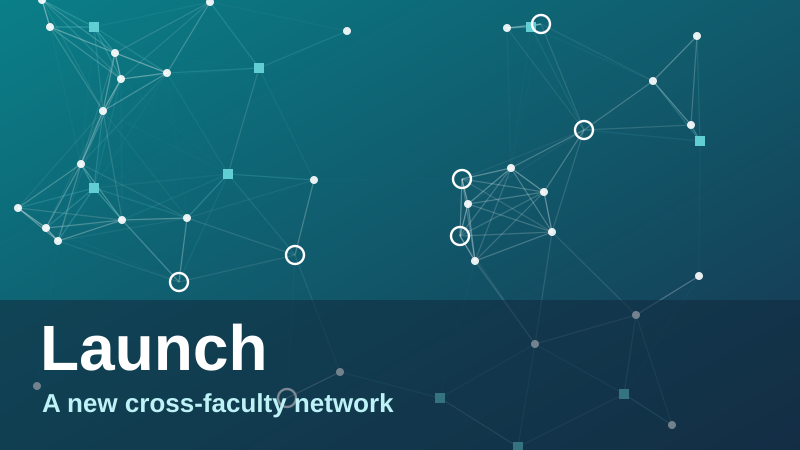
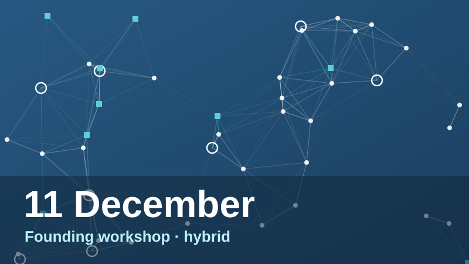

University of Pannonia · Network of Research Excellence
Understanding and designing human–AI–social systems that work for people.
AI is changing how people think, learn, decide and work together. When does it leave people more capable on their own – and when does the gain stay tied to the system?
Our unit of analysis is the human–AI–social system: AI outputs redistribute attention, knowledge, responsibility, roles and risks, not only individual decisions. Across all studies we therefore keep three outcomes apart:
Psychologists, social scientists, economists, engineers, computer scientists and educators work on connected problems – from the operator on the shop floor to the classroom, the university and the region.

